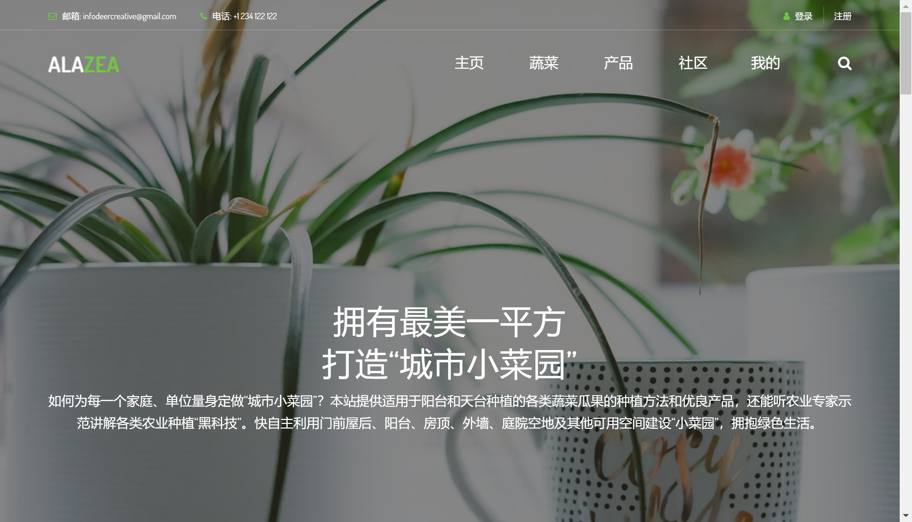
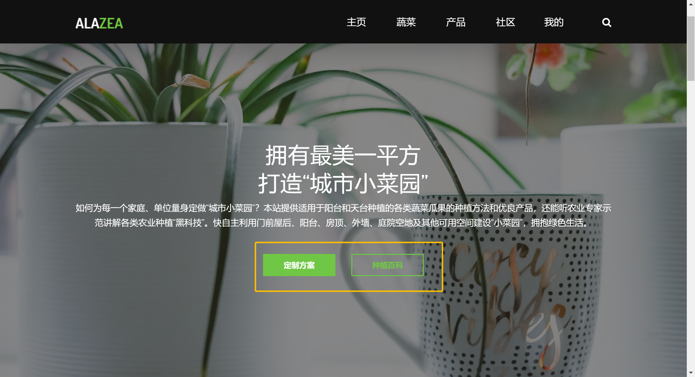
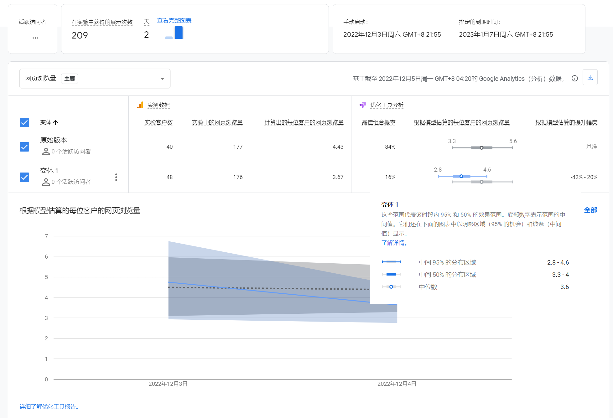
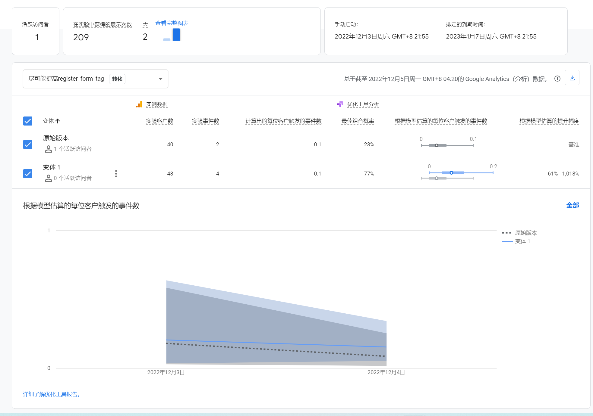

Coding & Testing
Growing vegetables at home
After the last feedback, the realization scheme was readjusted and presented in the page. Those who become annual members at the regular level can enjoy a 10% discount on purchases as well as ask questions to experts in the community, who will review the questions in the background and give guidance in the form of comments. Those who become lifetime members can leave their contact information and enjoy professional personalization of balconies and food nutrition programs. The website provides information of home balcony vegetable growing methods and its material purchase series including seeds, soil, fertilizer recommendation to the users in Guangzhou Members can enjoy purchase discounts and ask expert question services.
The focus of this user experience test is the general membership service. The test objective is do people understand what is the product series recommendation and how to purchase? Do they know how to ask experts?
Three usability tasks were designed to test the ease of use in finding information as well as asking experts:
1. Where to click to get vegetable planting information
2. How would you get to know a product suitable for the plants and purchase
3. Register and log in
4.When encounter difficulties while planting, ask experts in the communities


Summary of feedback：Because some of the pages are sturb, it is not very friendly when testing. The main problem of task2 is that the position of recommended product vegetables is not conspicuous enough and the text is not clear enough. And also, user past experience would have influence on that. And task 4, because I use same path to let user create sharing content and ask experts, leading to some confusing situation.
AB test
Design:The variable set in this ab test is the banner button variable of the home page. When the home page has buttons that lead to planting encyclopedia and custom solutions and product mall, users are more likely to be induced to click on the buttons to browse the pages of the website and improve the page view rate. So, the prediction is that having the button will result in better views because when users are using a cell phone to view the page, it is possible that the navigation bar will be in a tucked away state and will not be displayed in its entirety. If there are buttons that can help them get to other pages faster and go to a higher page view rate. By quickly understanding the information and services offered by the website, users are more likely to register.
 Outcome: Having the bottoms that lead traffic to other page of the website Lead buttons do bring more traffic to the site.However, the amount of data is insufficient and does not seem to be sufficient to see if it affects the conversion rate of registrations
To see my struggling working experience，you can visit my journal here.